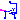
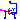
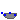
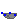
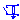
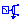
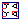

Library with auxiliary models for testing
Extends from Modelica.Icons.UtilitiesPackage (Icon for utility packages).
| Name | Description |
|---|---|
| Parameter records | |
| VfController | Voltage-Frequency controller |
| Transform instantaneous stator inputs to rotor fixed space phasor | |
| Transform rotor fixed space phasor to instantaneous stator quantities | |
| DQToThreePhase | Transforms dq to three-phase |
| DQCurrentController | Current controller in dq coordinate system |
| SinCosEvaluation | Evaluation of the signals of a sin-cos-resolver |
|  SwitchYD | Y-D-switch |
|  SwitchYDwithArc | Y-D-switch with arc |
|  TerminalBox | Terminal box Y/D-connection |
|  MultiTerminalBox | Terminal box Y/D-connection |
|  SwitchedRheostat | Rheostat which is shortened after a given time |
|  RampedRheostat | Rheostat with linearly decreasing resistance |
| Coupling | Ideal rotational coupling |
|  DcBrakeSettings | Setting for DC current braking |
| Computes machine parameter from usual datasheet | |
| Calculates Impedances from nominal values |
Voltage-Frequency controller
Extends from Modelica.Blocks.Interfaces.SIMO (Single Input Multiple Output continuous control block).
| Name | Description |
|---|---|
| nout | Number of outputs |
| u | Connector of Real input signal [Hz] |
| m | Number of phases |
| orientation[m] | Orientation of phases [rad] |
| VNominal | Nominal RMS voltage per phase [V] |
| fNominal | Nominal frequency [Hz] |
| BasePhase | Common phase shift [rad] |
| EconomyMode | Economy mode: voltage quadratic dependent on frequency |
| Name | Description |
|---|---|
| u | Connector of Real input signal [Hz] |
| y[nout] | Connector of Real output signals |
Transform instantaneous stator inputs to rotor fixed space phasor
The polyphase input values u[m] are transformed to the corresponding space phasor which is rotated to the rotor fixed reference system,
using the provided mechanical rotor angle phi. The output are the resulting d and q components of the space phasor arranged in one vector y[2].
Extends from Modelica.Blocks.Interfaces.MIMO (Multiple Input Multiple Output continuous control block).
| Name | Description |
|---|---|
| nin | Number of inputs |
| nout | Number of outputs |
| m | Number of phases |
| p | Number of pole pairs |
| Name | Description |
|---|---|
| u[nin] | Connector of Real input signals |
| y[nout] | Connector of Real output signals |
| phi | [rad] |
Transform rotor fixed space phasor to instantaneous stator quantities
The d and q components of a space phasor u[2] are rotated back to the stator fixed reference system,
using the provided mechanical rotor angle phi. The output are the instantaneous polyphase values y[m].
Extends from Modelica.Blocks.Interfaces.MIMO (Multiple Input Multiple Output continuous control block).
| Name | Description |
|---|---|
| nin | Number of inputs |
| nout | Number of outputs |
| m | Number of phases |
| p | Number of pole pairs |
| Name | Description |
|---|---|
| u[nin] | Connector of Real input signals |
| y[nout] | Connector of Real output signals |
| phi | [rad] |
Transforms dq to three-phase
Transforms dq currents or voltages to three-phase currents or voltages.
The desired d- and q-components of the space phasor in rotor fixed coordinate system are given by inputs d and q.
Using the given rotor position (input phi), the correct three-phase values (output y[3]) are calculated.
They can be used to feed a current source which in turn feeds an induction machine.
Inputs d and q can be given either as peak values (useRMS=false) or as RMS (useRMS=true).
The correction by factor √2 is done automatically.
Extends from Modelica.Blocks.Interfaces.MO (Multiple Output continuous control block).
| Name | Description |
|---|---|
| m | Number of phases |
| p | Number of pole pairs |
| useRMS | If true, inputs dq are multiplied by sqrt(2) |
| nout | Number of outputs |
| Name | Description |
|---|---|
| y[nout] | Connector of Real output signals |
| d | d-component |
| q | q-component |
| phi | Rotor angle [rad] |
Current controller in dq coordinate system
Simple Current controller
The desired d- and q-component of the space phasor current in rotor fixed coordinate system are given by inputs id and iq.
Using the given rotor position (input phi), the actual three-phase currents are measured and transformed to the d-q coordinate system.
Two PI controllers determine the necessary d- and q- voltages, which are transformed back to three-phase (output y[3]).
They can be used to feed a voltage source which in turn feeds a permanent magnet synchronous machine.
Inputs d and q can be given either as peak values (useRMS=false) or as RMS (useRMS=true).
The correction by factor √2 is done automatically.
The measured currents iActual[m] are assumed to be instantaneous values.
Note: No care is taken for current or voltage limiting, as well as for field weakening.
Extends from Modelica.Blocks.Interfaces.MO (Multiple Output continuous control block).
| Name | Description |
|---|---|
| p | Number of pole pairs |
| useRMS | If true, inputs dq are multiplied by sqrt(2) |
| fsNominal | Nominal frequency [Hz] |
| VsOpenCircuit | Open circuit RMS voltage per phase @ fsNominal [V] |
| Rs | Stator resistance per phase [Ohm] |
| Ld | Inductance in d-axis [H] |
| Lq | Inductance in q-axis [H] |
| decoupling | Use decoupling network |
| nout | Number of outputs |
| Name | Description |
|---|---|
| y[nout] | Connector of Real output signals |
| id | Reference of d-current |
| iq | Reference of q-current |
| phi | Rotor angle [rad] |
| iActual[m] | Measured three-phase currents [A] |
Evaluation of the signals of a sin-cos-resolver
The sin-cos-resolver provides four tracks:
All four tracks have the same amplitude and the same offset > amplitude. Offset is used to detect loss of a track. To remove offset, (minus sine) is subtracted from (sine) and (minus cosine) from (cosine), resulting in a cosine and a sine signal with doubled amplitude but without offset.
Interpreting cosine and sine as real and imaginary part of a phasor, one could calculate the angle of the phasor (i.e., transform rectangular coordinates to polar coordinates). This is not very robust if the signals are superimposed with some noise. Therefore the phasor is rotated by an angle that is obtained by a controller. The controller aims at imaginary part equal to zero. The resulting angle is continuous, i.e. differentiating the angle results in 2*π*frequency. If desired, the angle can be wrapped to the interval ]-π, +π].
If the sin-cos-resolver provides one period of the tracks during a rotation of 2π/p, the result is the angle with respect to one pole pair and can be directly used for field oriented control.
Extends from Modelica.Blocks.Icons.Block (Basic graphical layout of input/output block).
| Name | Description |
|---|---|
| u[4] | Signal from sin-cos-resolver |
| phi | Angle [rad] |
| w | Angular velocity [rad/s] |
Y-D-switch
| Name | Description |
|---|---|
| m | Number of phases |
| Ron | Closed switch resistance [Ohm] |
| Goff | Opened switch conductance [S] |
| delayTime | Time delay [s] |
| Name | Description |
|---|---|
| plugSupply | To grid |
| plug_sp | To positive stator plug |
| plug_sn | To negative stator plug |
| control[m] |
Y-D-switch with arc
| Name | Description |
|---|---|
| m | Number of phases |
| Ron | Closed switch resistance [Ohm] |
| Goff | Opened switch conductance [S] |
| delayTime | Time delay [s] |
| V0 | Initial arc voltage [V] |
| dVdt | Arc voltage slope [V/s] |
| Vmax | Max. arc voltage [V] |
| Name | Description |
|---|---|
| plugSupply | To grid |
| plug_sp | To positive stator plug |
| plug_sn | To negative stator plug |
| control[m] |
Terminal box Y/D-connection
This model represents the internal connections of the terminal box of an electric machine.
The parameter terminalConnection is used to switch between star
(terminalConnection = "Y") and delta (terminalConnection = "D") connection.
The (single-phase) connector starPoint is only available if star connection is selected.
| Name | Description |
|---|---|
| m | Number of phases |
| terminalConnection | Choose "Y" for star or "D" for delta connection |
| Name | Description |
|---|---|
| plug_sp | To be connected with positive stator plug |
| plug_sn | To be connected with negative stator plug |
| plugSupply | To be connected with grid |
| starpoint | Star point |
Terminal box Y/D-connection
This model represents the internal connections of the terminal box of an electric machine.
The parameter terminalConnection is used to switch between star
(terminalConnection = "Y") and delta (terminalConnection = "D") connection.
The star point is a plug with
mSystem = Electrical.Polyphase.Functions.numberOfSymmetricBaseSystems(m) phases,
representing the star points of each base system; see
Modelica.Magnetic.FundamentalWave.UsersGuide.Polyphase.
| Name | Description |
|---|---|
| m | Number of phases |
| terminalConnection | Choose "Y" for star or "D" for delta connection |
| Name | Description |
|---|---|
| plug_sp | To be connected with positive stator plug |
| plug_sn | To be connected with negative stator plug |
| plugSupply | To be connected with grid |
| starpoint | Star point |
Rheostat which is shortened after a given time
Switched rheostat, used for starting induction motors with slipring rotor:
The external rotor resistance RStart is shortened at time tStart.
| Name | Description |
|---|---|
| m | Number of phases |
| RStart | Starting resistance [Ohm] |
| tStart | Duration of switching on the starting resistor [s] |
| Name | Description |
|---|---|
| plug_p | To positive rotor plug |
| plug_n | To negative rotor plug |
Rheostat with linearly decreasing resistance
Ramped rheostat, used for starting induction motors with slipring rotor:
The external rotor resistance RStart is reduced to zero,
starting at time tStart with a linear ramp tRamp.
| Name | Description |
|---|---|
| m | Number of phases |
| RStart | Starting resistance [Ohm] |
| tStart | Time instance of reducing the rheostat [s] |
| tRamp | Duration of ramp [s] |
| Name | Description |
|---|---|
| plug_p | To positive rotor plug |
| plug_n | To negative rotor plug |
Ideal rotational coupling
This is a model of an ideal stiff coupling:
One device connected to the coupling is turning clockwise (looking at the shaft end),
the other device connected to the coupling is turning counter-clockwise (looking at the shaft end).
The torque at flange_b has the same magnitude as the torque at flange_a but opposite sign.
This is achieved by using an
ideal gear with ratio = -1.
Variable w represents the angular velocity of flange_a
and tau represents the torque transferred from flange_a to flange_b.
This behaviour is essential when coupling electric machines. The usage is demonstrated in the example Modelica.Electrical.Machines.Examples.DCMachines.DCPM_Drive.
Extends from Modelica.Mechanics.Rotational.Interfaces.PartialTwoFlanges (Partial model for a component with two rotational 1-dim. shaft flanges).
| Name | Description |
|---|---|
| flange_a | Flange of left shaft |
| flange_b | Flange of right shaft |
Setting for DC current braking
Lets the user choose the layout, and determines the necessary DC current for DC current braking of an induction machine.
The icon shows the four layout variants. Phases with half the current are depicted with half the line thickness, phases with zero current are depicted with dashed line.
| Name | Description |
|---|---|
| INominal | Nominal RMS current per phase [A] |
| layout | Braking connection layout |
| Results | |
| terminalConnection | Terminal connection |
| connect3 | Connect 3rd terminal |
| Idc | DC braking current [A] |
| is[3] | Phase currents [A] |
 Modelica.Electrical.Machines.Utilities.SynchronousMachineData
Modelica.Electrical.Machines.Utilities.SynchronousMachineDataComputes machine parameter from usual datasheet
The parameters of the synchronous machine model with electrical excitation (and damper) are calculated from parameters normally given in a technical description, according to the standard EN 60034-4:2008 Appendix C.
Extends from Modelica.Icons.Record (Icon for records).
| Name | Description |
|---|---|
| SNominal | Nominal apparent power [V.A] |
| VsNominal | Nominal stator voltage per phase [V] |
| fsNominal | Nominal stator frequency [Hz] |
| IeOpenCircuit | Open circuit excitation current @ nominal voltage and frequency [A] |
| effectiveStatorTurns | Effective number of stator turns |
| x0 | Stator stray inductance per phase (approximately zero impedance) [pu] |
| xd | Synchronous reactance per phase, d-axis [pu] |
| xq | Synchronous reactance per phase, q-axis [pu] |
| xdTransient | Transient reactance per phase, d-axis [pu] |
| xdSubtransient | Subtransient reactance per phase, d-axis [pu] |
| xqSubtransient | Subtransient reactance per phase, q-axis [pu] |
| Ta | Armature time constant [s] |
| Td0Transient | Open circuit field time constant Td0' [s] |
| Td0Subtransient | Open circuit subtransient time constant Td0'', d-axis [s] |
| Tq0Subtransient | Open circuit subtransient time constant Tq0'', q-axis [s] |
| Material | |
| TsSpecification | Specification temperature of stator resistance [K] |
| TsRef | Reference temperature of stator resistance [K] |
| alpha20s | Temperature coefficient of stator resistance at 20 degC [1/K] |
| TrSpecification | Specification temperature of (optional) damper cage [K] |
| TrRef | Reference temperature of damper resistances in d- and q-axis [K] |
| alpha20r | Temperature coefficient of damper resistances in d- and q-axis [1/K] |
| TeSpecification | Specification excitation temperature [K] |
| TeRef | Reference temperature of excitation resistance [K] |
| alpha20e | Temperature coefficient of excitation resistance [1/K] |
| Result | |
| Rs | Stator resistance per phase at TRef [Ohm] |
| Lssigma | Stator stray inductance per phase [H] |
| ratioCommonStatorLeakage | Ratio of common stray inductance / total stray inductance of stator winding |
| Lmd | Main field inductance per phase in d-axis [H] |
| Lmq | Main field inductance per phase in q-axis [H] |
| Lrsigmad | Damper stray inductance in d-axis [H] |
| Lrsigmaq | Damper stray inductance in q-axis [H] |
| Rrd | Damper resistance in d-axis at TRef [Ohm] |
| Rrq | Damper resistance in q-axis at TRef [Ohm] |
| Re | Excitation resistance at TRef [Ohm] |
| sigmae | Stray fraction of total excitation inductance |
Modelica.Electrical.Machines.Utilities.TransformerDataCalculates Impedances from nominal values
The parameters of the transformer models are calculated from parameters normally given in a technical description.
Extends from Modelica.Icons.Record (Icon for records).
| Name | Description |
|---|---|
| f | Nominal frequency [Hz] |
| V1 | Primary nominal line-to-line voltage (RMS) [V] |
| C1 | Choose primary connection |
| V2 | Secondary open circuit line-to-line voltage (RMS) @ primary nominal voltage [V] |
| C2 | Choose secondary connection |
| SNominal | Nominal apparent power [V.A] |
| v_sc | Impedance voltage drop pu |
| P_sc | Short-circuit (copper) losses [W] |
| Result | |
| n | Ratio primary voltage (line-to-line) / secondary voltage (line-to-line) |
| R1 | Warm primary resistance per phase [Ohm] |
| L1sigma | Primary stray inductance per phase [H] |
| R2 | Warm secondary resistance per phase [Ohm] |
| L2sigma | Secondary stray inductance per phase [H] |